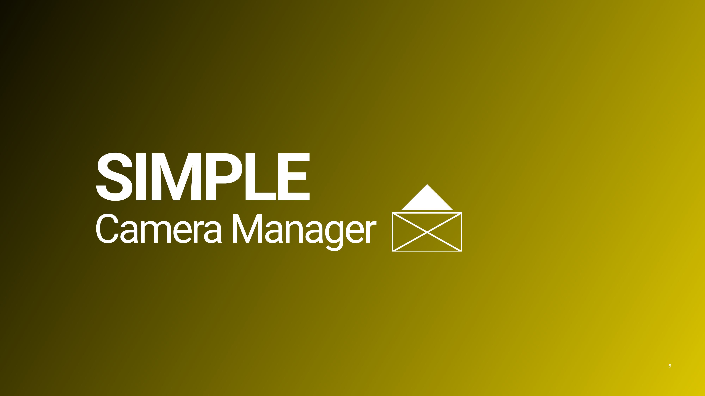
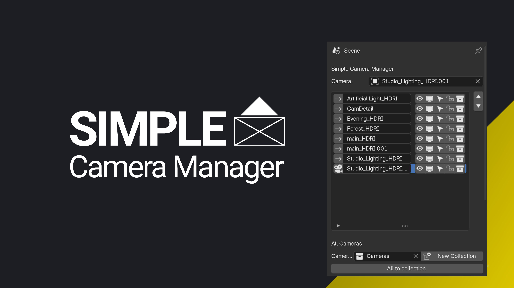

Simple Camera Manager
What is Simple Camera Manager?

Simple Camera Manager helps you organize and adjust scene cameras directly in the 3D view, bringing all camera controls to your fingertips for fast and intuitive handling.
Feature Overview
- All Cameras at a Glance: See and compare all your cameras and their settings in one place.
- Quick Camera Switching: Toggle between cameras with hotkeys (default: Ctrl + Shift + Arrow Left/Right) or directly from the addon panels.
- Slick and Efficient UI: A clean interface that keeps everything within reach.
- Custom Camera Resolutions: Assign different resolutions to each camera.
- Lock/Unlock Cameras: Instantly lock or unlock all camera transformations from the overview panel or pie menu.
- Render Slots: Assign different render slots to different cameras to avoid overwriting renders.
- Camera Collection: Organize your cameras by grouping them in collections for easy management.
- Background Image Settings: Control background image settings directly from the 3D view—toggle, adjust opacity, or change render order.
- Resolution from Background Image: Set the camera resolution based on the background image.
- World Material Control: Assign different world materials to each camera.
- Exposure Adjustments: Assign specific exposure values to compensate for lighting changes between cameras.
- Flexible Hotkeys: Customize hotkeys from the addon preferences.
- 
Why Simple Camera Manager?
- Stay Organized: See all your cameras and their key settings at a glance, and make adjustments as needed.
- Quick Access: All functions are easily accessible from the 3D View—no need to dig through menus.
- User-Friendly: The interface is simple, and the tools are easy to understand, with helpful descriptions where needed.
- Continuous Support: The addon is well-documented, with ongoing development. Share your feedback to help improve it further.